武器系统和武器使用总览¶
M-61“火神”六管加特林航炮¶
由美国海军摄影师 Kristopher Wilson 拍摄（041129-N-5345W-034）
M-61火神炮是一种六管液压驱动的20毫米机炮，能以每分钟6000发的速度射击。
该机炮安装在F-14驾驶舱的下方，炮口位于机身的左下角。机炮的圆柱形弹药箱内携带了650发20毫米炮弹，并且会保留机炮发射后留下的弹壳。
机炮的安装角比武器基准线（ADL）高大概3度，这样更利于狗斗时的前置射击。
如果要使用机炮射击，不需要从WCS（武器控制系统）选择，只要打开主军械开关，飞行员可以直接在操作杆上选择使用机炮。
选择使用机炮后，HUD底部会出现一个G标志，剩余弹药量入下图所示。

除了HUD上的指示外，飞行员右侧垂直面板上的弹药剩余指示器也显示了剩余弹药数量。指示器从650开始往下计数，并且可以通过旋转指示器下方的旋钮到所需数量来手动复位。
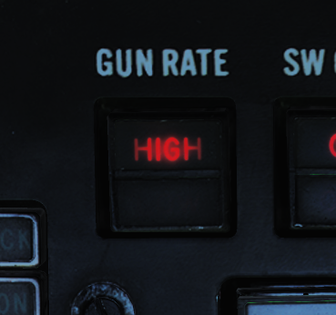{kind=link}
机炮拥有每分钟4000发和每分钟6000发两种射击模式。低射速模式通常用于对地攻击，高射速模式用于对空攻击。机炮射速可以通过机炮射速开关切换，当选择ACM模式时自动设置为高射速模式。
WCS（武器控制系统）可以在HUD上显示瞄准准星以提高机炮的射击精度。对于空对空和空对地模式，机炮有两种准星可以使用。在对空作战中，分为手动空对空航炮准星和RTGS（实时瞄准具）。
手动空对空航炮准星
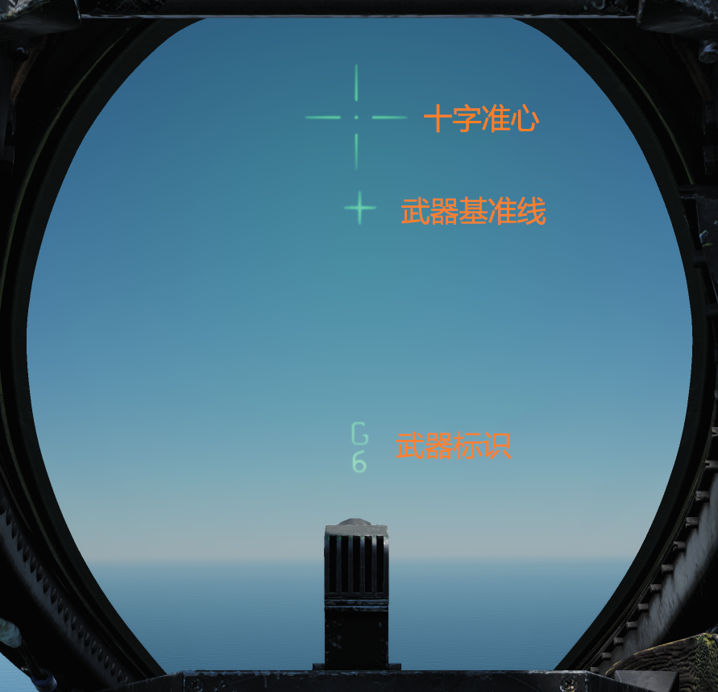在手动模式下，HUD上显示了ADL（武器基准线），武器符号，以及手动准星。在空对空模式选择机炮后，按下左侧油门上的CAGE/SEAM 按钮来进入此模式。该模式下飞行员需要用手动准星来瞄准，并且需要自己估算提前量。
手动准星角度是可以微调的，可以通过机炮ELEV面板上的旋钮让飞行员自己调节，正常情况下，一般设置为53毫弧度，以便让手动准星与机炮瞄准线保持一致。

实时航炮准星

实时航炮准星模式是机炮在空对空模式下的标准射击模式。
在RTGS（实时航炮准星）模式中，如果没有来自WCS（武器控制系统）的目标数据，WCS会计算子弹的轨迹并显示炮弹在距离你1000和2000英尺处通过的位置。菱形标志代表1000英尺处炮弹通过的位置，而准星代表2000英尺处炮弹通过的位置。
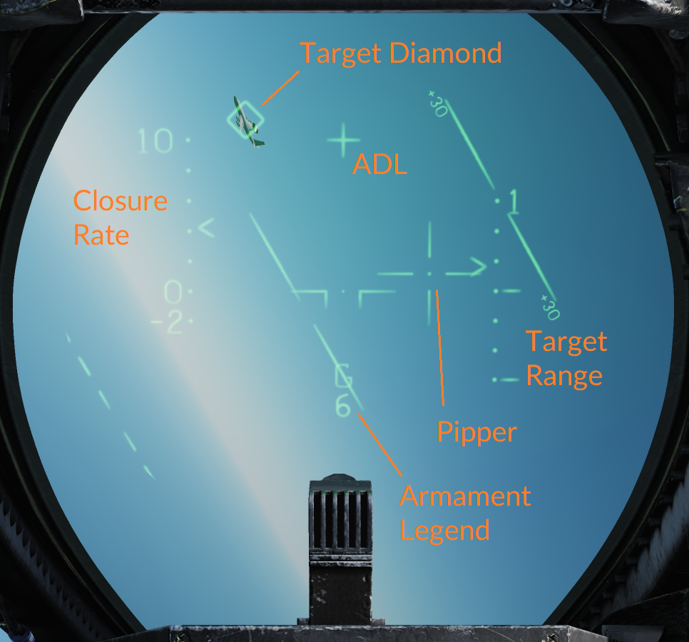如果目标数据可以从WCS获得（目标在STT模式下被跟踪），则准星显示当前4000英尺范围内的子弹位置，菱形标志显示目标的雷达视线（目标位置）。 这意味着飞行员需要将准星对准目标来击落它。
除了计算目标位置并提供指示外，RTGS准星还能够显示命中指示。当计算出发射的炮弹击中目标位置时，菱形标志将闪烁并从目标指示切换到指示目标范围内的炮弹位置。
利用这个功能，我们就可以知道目标是否被击中。如果成功击中目标，菱形标志就会在目标上方闪烁，表明炮弹弹穿过了目标的位置。
手动空对地航炮准星

手动空对地航炮准星除了是通过RIO左垂直控制台武器面板上的ATTK MODE选择器设置以外与手动空对空航炮准星并无差别。选择此选择器的MAN可在空对地模式中启用与空对空准星一样的HUD符号，唯一不同的HUD符号是在HUD右侧增加的雷达高度显示。机炮的提前量应通过依据空速，目标范围和俯冲角度预先计算的参数进行设置。
计算机/飞行员模式

计算机/飞行员模式用于使武器控制系统持续计算武器撞击点，除其他空对地武器外，也用于计算航炮。它就像手动空对地航炮准星一样，由RIO通过选择ATTK MODE选择器的CMPTR-PLT设置。
在此模式下AN/AWG-9雷达用于武器碰撞点的精确测距以及在HUD上显示该碰撞点。
HUD使用十字准星指示实时武器碰撞点，用菱形提示超出射程。当菱形消失时，位于十字准星下的目标正处于航炮射程内。拉起提示在HUD上垂直移动，当它位于或高于武器撞击点 (十字准星) 时, 表示需要立即拉起飞机以免避免撞击地面或目标距离太近，无法保证安全投弹。
HUD右侧显示气压高度标尺
航炮混合模式

通过将武器面板上的A/G GUN开关（在RIO左侧垂直面板上）设置为MIXED，航炮可以在另一个空对地弹药被选择时同时被使用。 这使得扳机能够发射航炮，但是没有HUD符号可用于航炮，因为它被用于显示所选弹药的投放数据。 在此模式下飞行员需要通过HUD上唯一的参考武器基准线手动估算航炮碰撞点。
空对空武器¶
空对空导弹的 HUD 标识¶
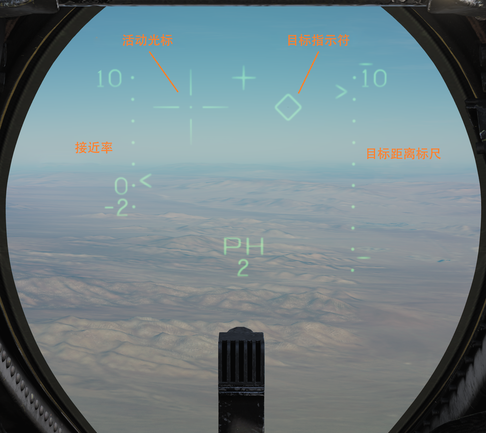上图展示了在空对空显示模式下选择了Phoenixes的HUD。
作为标准，HUD在左侧以百节为单位显示 接近率 ，从-200到+1000节，当前接近率通过 < 显示
此外在HUD右侧显示有 目标距离标尺 ，通过显示的标尺提示目标距离，这种情况下显示的最大距离为10海里。目标距离标尺通过 > 显示当前目标距离并通过破折号 （-）提示被选中武器的最大、最小射程。
The Movable Reticle （被称为十字准星用于空对地和机炮的使用）和 目标指示器 可以根据当前情况显示不同的东西。
The Movable Reticle shows current TCS line of sight if it exists at the same time as a radar STT lock except for when AIM-9s are selected. In the AIM-9 case it instead shows current AIM-9 seeker head line of sight.
The Target Designator diamond shows current radar STT line of sight if present and if not it instead shows the current TCS line of sight.
So effectually the TCS line of sight can be shown either by the movable reticle or the target designator depending on if a radar STT is also present and if a radar STT is present with AIM-9 selected it's not shown at all.
AIM-7 “麻雀”导弹¶
U.S. Navy photo by Photographer's Mate 3rd Class Joshua Karsten. (041108-N-8704K-008)
AIM-7麻雀空对空导弹是一种超音速助推 - 滑翔导弹，能够在各种天气条件下与飞机和导弹交战。AIM-7麻雀是一种中距空对空导弹，其中AIM-7E最大射程至少为16海里（30千米），AIM-7F和AIM-7M最大射程至少为38海里（70千米）。它的全天候能力来自于导弹由雷达制导，更确切地说是半主动雷达制导。这意味着麻雀的引导头通过AN/AWG-9照射目标并跟踪目标的雷达辐射反射。
F-14可以在机身上的四个专用槽和翼套挂架上挂载AIM-7E，AIM-7F和AIM-7M。
除了导弹射程，导引头和弹头的各种改进之外，不同版本之间的主要区别在于AIM-7E仅能通过连续波照射制导而AIM-7F和AIM-7M除了连续波之外还可以通过脉冲多普勒照射引导。
导弹发射准备¶

在发射前AIM-7导弹需要通过在前座飞行员ACM面板上选择MSL PREP-ON按钮来进行准备。这个指令将使武器控制系统开始准备AIM-7和AIM-54导弹。
如果是AIM-7，武器控制系统将向导弹提供电力用以预热电子设备和陀螺仪。它还通过轨道后端的发射器将雷达的连续波雷达视频注入导弹后端的接收器。此视频用于将AIM-7导弹调整到RIO在DDD面板选定的连续波频率上。当个别导弹调整并准备完毕时，对应的导弹状态窗口将变成白色以标明一枚准备完毕的导弹。
发射模式¶
在F-14上AIM-7有正常模式和瞄准线模式两种可用的发射模式。飞行员通过选择控制杆武器选择器上的SP/PH（麻雀/凤凰）位置去选择并发射AIM-7。没有办法去选择具体发射哪一枚麻雀，这是由武器控制系统自动完成的。
按压武器选择器从SP切换到PH，反之亦然。如果STT目标可用，除非在ACM面板上的MSL MODE（导弹模式）开关上选择BRSIT（瞄准线），否则武器控制系统将自动使用常规模式进行发射。在所有其他情况下，将使用瞄准线模式。
普通模式¶
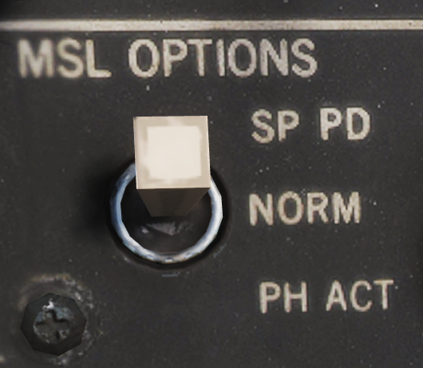{kind=link}
由于正常模式使用单目标跟踪与被跟踪的目标交战，因此武器控制系统可以使用连续波或脉冲多普勒进行制导。在正常模式下使用连续波时，AN/AWG-9雷达使用专用连续波天线能比泛指模式更直接的聚焦照射被跟踪的目标。虽然连续波是所有AIM-7型号的正常制导模式，但在使用AIM-7F和AIM-7M导弹时，可以选择脉冲多普勒制导模式。
这是在RIO的武器面板上通过将MSL OPTIONS开关设置到SP DP（麻雀 多普勒）来完成的。选择此选项后, 武器控制系统将使用脉冲多普勒照射引导麻雀导弹。
无论制导模式如何，武器控制系统都会计算导弹LAR（发射允许区间），并在垂直显示指示器和战术信息显示器上显示导弹发射射程。HUD显示目标菱形和当前目标距离，Rmin和 Rmax，而垂直显示指示器、详细数据显示器和战术信息显示器显示攻击制导符号系统以及上述导弹LAR指示。
瞄准线模式¶
瞄准线模式使用AN/AWG-9雷达上的连续波泛指天线, 将使导弹跟踪泛指区内反射最强的目标。除了在瞄准线模式下发射时，无论是在发射之前还是在发射之后，雷达将在目标丢失时切换到泛指模式，使飞行员能够通过将目标保持在泛指区域来尝试并挽救此次射击。
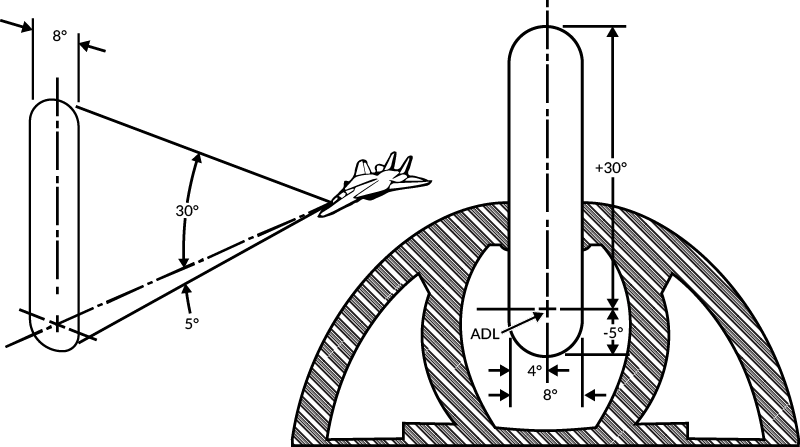AIM-9“响尾蛇”导弹¶
由美国海军摄影师 Kristopher Wilson 拍摄（050112-N-5345W-066）
AIM-9“响尾蛇”导弹是一种近距离空对空导弹。它使用红外引导头来锁定目标的红外信号，使其无论白天还是夜晚都能跟踪目标。
F-14“雄猫”可以携带从AIM-9D到AIM-M的所有海军版的AIM-9“响尾蛇”导弹。Heatblur F-14B“熊猫”目前可以携带AIM-9L和AIM-9M。
F-14能在挂架1A和B以及8A和B携带AIM-9。其中挂架1和8为翼套挂架，每个可携带两枚AIM-9，总计四枚。挂架1A和8A是专用于仅携带AIM-9的挂架，并且通常仅携带两枚以允许挂架1B和8B携带其他弹药。
导弹发射准备¶
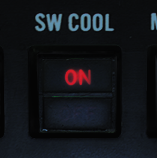{kind=link}
在AIM-9发射前需要启用引导头冷却。按下飞行员ACM面板的SW COOL开关或在相同面板选择ACM模式即可完成冷却操作。此指令会冷却导弹引导头，导弹会立刻显示就绪但要使引导头发挥全部性能至少需要60秒。
引导头模式¶
AIM-9G加入了能够进行响尾蛇扩展采集模式（SEAM）的引导头，后来所有由F-14携带的响尾蛇都能使用此模式。SEAM允许导弹头解锁并在范围（离ADL 40°’）内追踪目标，并允许飞行员引导目标，提升导弹的性能。它还允许F-14上的WCS驱动引导头在离ADL 20°的范围内跟踪目标，从而实现偏离瞄准线索敌。

F-14上的AIM-9依然可以使用旧的瞄准线模式，此时引导头保持隶属于ADL（2.5°视场）但通常SEAM用来在ADL扫描引导头或跟踪目标。引导头沿着两个背对背的D字进行扫描，基本上是一个大约6°宽的扫描锥，能在约3秒内覆盖整个扫描区。（如上图所示）与所有的响尾蛇一样，目标检测由音调表示。扫描时会有蜂鸣，当引导头头正在观察红外光源时，强度会增加。
导弹操作¶
通过飞行员操纵杆的武器选择开关来选择AIM-9“响尾蛇”导弹。按下武器选择开关可以循环选择用来发射的AIM-9，ACM面板相应状态窗口的棋盘指示器会指示被选择的导弹。当使用AIM-9时，HUD使用菱形指示被跟踪目标和准星（十字准线）指示当前导引头位置。如果有带距离的WCS轨道可用，则HUD还显示目标距离，最小距离和最大距离。如果有WCS轨道，则VDI，DDD和TID显示攻击制导符。
不带SEAM（无扫描）的基础导弹瞄准线模式由未激活ACM模式时按下飞行员ACM面板的BRSIT（瞄准线）开关来控制。在此模式中飞行员把目标放在ADL，当有声音提示时开火。
如果未使用BRSIT开关或ACM模式处于激活状态，AIM-9将使用SEAM并进行双D扫描。如果存在WCS目标，则引导头扫描雷达或TCS视线周围，否则导弹将扫描ADL周围。

在SEAM模式下锁定目标需要飞行员按下左侧油门的CAGE/SEAM。这会点亮ACM面板的SEAM LOCK灯并将引导头解锁4.5秒，并允许它跟踪引导头视野内的目标。如果没找到红外信号源，则导弹会再次锁住，并且SEAM LOCK灯熄灭。
如果成功锁定，则音效降保持不变，SEAM LOCK灯保持点亮，允许飞行员按下操纵杆扳机来发射导弹。发射后会自动选择下一枚AIM-9。
AIM-54“不死鸟”导弹¶
由美国海军摄影师 Felix Garza Jr. 拍摄（030320-N-4142G-013）
| 注意: | 照片中的导弹还未装上前部弹翼。 |
|---|
AIM-54“不死鸟”导弹是一种长程空空导弹，它本来是为流产的 F-111B 舰队防空战斗机计划而设计的。F-111B 计划以失败告终，使得 F-111B 的 AIM-54 导弹与配套的AN/AWG-9 WCS 最终被用于装备 F-14。
F-14 能够携带6枚 AIM-54 导弹，左右翼套挂架上各搭载一枚，其余四枚搭载于机身挂架上。由于导弹冷却系统的设计原因，两个机身前部挂架必须总是挂弹，这意味着如果前部挂架不挂载导弹，机身后部挂架便无法使用。而翼套挂架内置了单独的冷却系统。
“不死鸟”导弹具有支持 STT（单目标跟踪）攻击单个目标和 TWS（边搜索边跟踪）攻击多个目标的能力。
AIM-54 有两个不同的型号——AIM-54A 和 AIM-54C。Heatblur Simulations 的 F-14B“雄猫”模拟了这两种型号的“不死鸟”，此外，我们为 AIM-54A 单独模拟了 Mk47 和 Mk60 火箭发动机。装备这两种不同型号发动机的 AIM-54A 在有效射程上有些差异，而 AIM-54C 和 AIM-54A 的主要区别则是 C 型使用了数字信号引导头，而不是模拟信号引导头，从而提升了性能。
使用 PD STT（脉冲多普勒单目标跟踪，见后文）模式攻击战斗机尺寸的目标时，AIM-54 的射程至少有60海里。而使用 TWS 攻击多目标时，射程降低到约50海里。攻击大型目标时，有效射程会增加，反之，攻击小型目标时，有效射程会缩短。
如果使用主动雷达发射，根据目标尺寸，射程也稍有差异，攻击战斗机尺寸的目标射程会降低至10海里。需要注意的是，如果配置时选择在 SARH 模式下使用主动雷达发射，但导弹未能探测到目标时，导弹会返回 SARH 模式。
导弹发射准备¶
AIM-54 导弹发射的准备过程是由激活 ACM，或选择飞行员 ACM 面板上的 MSL PREP 开关开始的。这将接通导弹的电源和冷却系统，同时也会启动导弹的自检程序（BIT）。
与 AIM-7 一样，在发射 AIM-54 前，需要通过装在挂架导轨末端的发射机向导弹尾部的接收器发送导弹调试数据。整个导弹发射准备周期大约需要2分钟来完成，完成后飞行员 ACM 面板上对应的挂载状态窗口会显示 AIM-54 发射准备完毕。
发射模式¶
AIM-54 的引导头能够使用半主动雷达制导（SARH）和主动雷达制导（ARH）来跟踪目标。
通常来说，导弹的发射至离轨（LTE），也就是从按下扳机开始，直到导弹离开导轨所需的时间，是3秒钟。但 ACM 主动模式下发射则是个例外，如果目标与武器基准线（ADL）的偏差在10度内，LTE会缩短至1秒。
TWS SARH/ARH¶
在 TWS（Track While Scan，边搜索边跟踪）模式下，AN/AWG-9 可以支持同时对6个不同目标发射6枚 AIM-54 导弹。在 AIM-54 追踪的第一阶段，导弹接收由 AN/AWG-9 雷达发射的引导指令和目标的雷达回波来进行半主动制导。当目标进入导弹引导头 ARH 模式的启动距离后，AN/AWG-9 会命令导弹切换至主动雷达制导。
如果 AN/AWG-9 雷达不发送这条指令，导弹便无法切换至 ARH 模式，所以 AIM-54 也就无法发射后不管，而且它必须受制导，直到导弹雷达开机。然而，作为备用措施，AN/AWG-9会继续向导弹传输制导指令，以防导弹无法自主截获目标。这说明AIM-54本质上并非发射后不管，但可以认为导弹进入ARH模式后能够自主攻击目标，然而驾驶舱系统中并不会明确指示模式转换行为，因此机组必须手动监视导弹的状态。
PD STT SARH¶
在 PD STT（脉冲多普勒 单目标跟踪）模式下，AIM-54 全程使用 SARH（半主动雷达制导）模式，相比 TWS 模式，导弹以会更高的频率接收雷达制导指令，同时由于使用单目标跟踪，目标会受到持续聚焦照射。使用 PD STT 可以少许增加 AIM-54 引导头的有效搜索距离。
主动雷达制导（ARH）¶
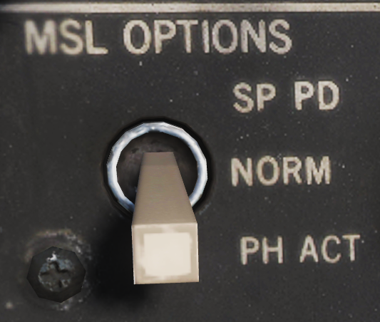{kind=link}
无论是在 TWS 还是在脉冲多普勒 STT 模式下，AIM-54 可以在发射后立刻接收指令开机，这是通过发射导弹前，将 MSL OPTIONS 开关拨至 PH ACT 位置实现的。这会让 WCS 在导弹发射后传输的第一条指令中立刻命令 AIM-54 进入主动雷达制导。如果从目标后半球6海里内，或目标前半球10海里内发射导弹，WCS（武器控制系统）会自动发送这条指令，而不再使用 SARH 模式。
与另外两种 SARH 模式下一样，如果导弹引导头未能主动探测到目标，导弹会返回 SARH 模式，直到引导头主动截获目标。
ACM 主动制导¶
AIM-54 的最后一种工作模式是 ACM 主动模式，在这个模式下，导弹在发射前就已经接收指令开机，因此导弹在该模式下可以真正发射后不管。AIM-54 导弹除了在发射前接收开机指令外，还会从 WCS 额外接收一条预对准引导头的指令，将引导头指向当前可用的 WCS 跟踪目标。
在飞行员 ACM 面板上按下 MSL MODE 开关选择 BRSIT（瞄准线），或是在无 WCS 跟踪目标时进入 ACM 模式，或使用非脉冲多普勒雷达或 TCS 跟踪模式时，导弹便会进入 ACM 主动模式。在没有跟踪目标的情况下使用瞄准线模式或 ACM 主动模式时，导弹会沿着 ADL（武器基准线）发射，并锁定它探测到的第一个目标，但如果使用非多普勒雷达跟踪目标，发射前引导头会提前对准跟踪目标。
ECM 模式¶
在所有引导模式中，如果受到干扰，引导头会自动切入被动 ECM 跟随模式，通过干扰源方位角来跟踪目标，直到引导头能重新使用 SARH 或 ARH 跟踪目标。这个切换过程是自动完成的，不需要机组操作，操作员也不会收到提示。
导弹操作¶
在飞行员驾驶杆上选择 SPH/PH（麻雀/不死鸟）开关的位置，然后按下选择开关来从 SP 切换至 PH 来选择 AIM-54 导弹。再次按下武器选择开关可以重新选择 SP。
在瞄准线模式下，或者在 ACM 模式且 WCS 无跟踪目标的情况下发射 AIM-54 时，除了用于瞄准导弹的 ADL 线外，HUD上不会显示任何标识。
在 STT 模式下，且 WCS 有跟踪目标时，HUD上会显示指定目标，如果 TCS 也有跟踪目标，目标上会显示十字准星。前者指示了 WCS 跟踪目标，后者指示了 TCS 的视线。HUD 右侧的距离标尺上显示了目标当前距离、Rmin（最小射程）和 Rmax（最大射程），而 VDI、DDI 和 TID 上则显示了攻击引导标识。
TWS¶
在 TWS 模式下使用 AIM-54时，WCS 会自动分配跟踪目标的优先级，给每个目标指定一个发射序号，表示导弹的发射顺序。向第一个目标发射导弹后，目标上的发射序号会消失，所有其他目标的发射序号分别减少 1。
依次对每个目标按下一次扳机来继续攻击跟踪目标 2 至 6，等前一枚导弹离轨后再按下扳机，直到希望发射的导弹全部发射完毕。
导弹发射后，跟踪目标右侧的发射优先级数字会被替换为 TTI，也就是预计命中时间，这是计算出的导弹命中目标所需时间。此外，当 AN/AWG-9 向导弹发送开机指令时，TTI 数字会闪烁，表示跟踪目标的导弹已经接收主动模式开机指令。
正被导弹攻击的目标会保持高亮，直到预计命中时间 + 15秒，经过预计命中时间 + 15秒后，VDI、DDD和TID上会显示脱离“X”标识。
TID 标识信息详见 TID Symbology 。
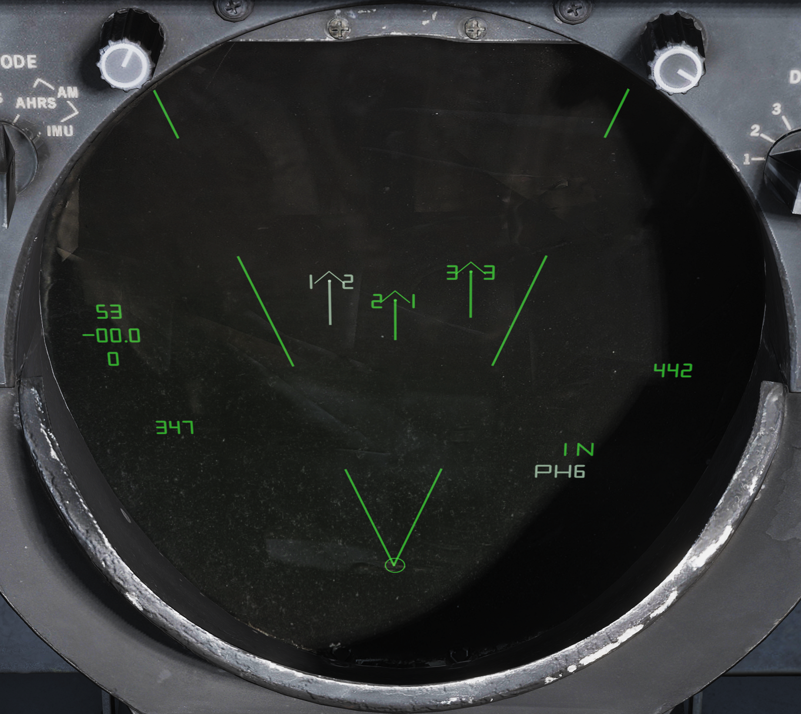通过 CAP 面板设置可以让 WCS 强制在发射序列中包括一个目标，还可以让 WCS 强制排除某个目标，不对其发射导弹，也是在 CAP 面板上设置。此外，勾选一个目标并按下 RIO 武器面板上的 NEXT LAUNCH 按钮，可以命令 WCS 将该目标作为发射序列 1 号优先级目标。
如果 WCS 不处于 TWS AUTO 模式，那么 WCS 会自动切换至该模式来接管 AN/AWG-9 雷达，照射所有攻击目标。除了跟踪目标数字编号外，TID 也会显示 TWS 扫描范围的中心点。
HUD 和 VDI 上显示了一个转向标识来引导飞行员控制飞机，使雷达以最优条件照射目标，同时 HUD 和 VDI 上也显示了本机至 1 号目标的距离、Rmin 和 Rmax。TID 上显示了完整的攻击符号标识，包括目标优先级编号和每个目标的最优发射距离，详见 Track While Scan (TWS)。
空对地武器¶
尽管格鲁曼公司主要将F14设计为一款空优型拦截战斗机，但它从一开始就非常明确地引入并测试了挂载美国现役Mk-80系列通用航空炸弹的功能。此外，它还可以挂载Mk-20石眼空对地集束炸弹以及五英寸直径折翼式航空火箭弹（FFAR）。
随着F14所担负的作战任务改变为对地精确打击任务，其也随之具备了挂载数个Mk-80系列制导炸弹的能力，如果说得更具体些的话，这些制导炸弹通常都是激光制导版本。
空对地武器设定¶
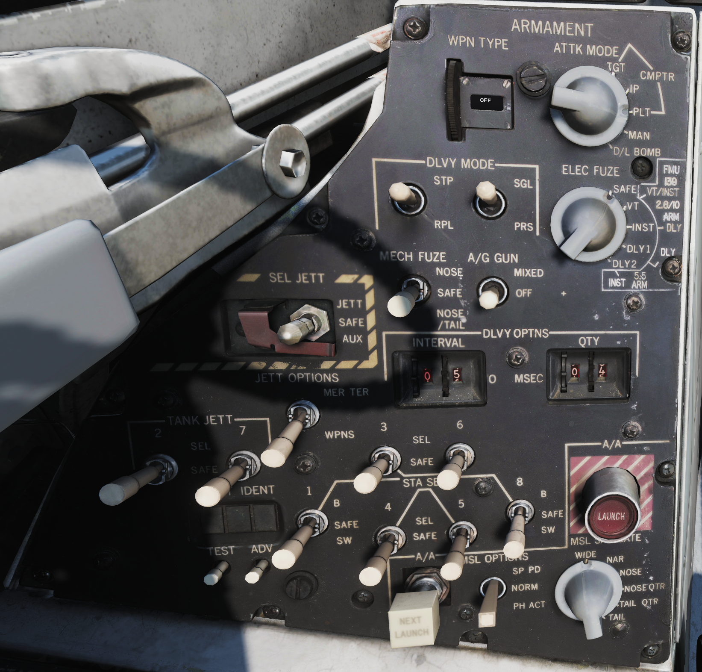空对地武器的投放的设定是通过RIO设置其位于后座座舱左垂直面板的武器面板界面而达成的。
投放的弹药类型主要由面板顶部的转轮来设置，这将为武器控制系统（WCS）所选的弹药类型配置的正确参数。
| 注意: | Mk81，Mk82以及Mk83都有 L 和 H 的选项以分别对应航弹的低阻版本和高阻版本。 |
|---|
在DLVY MODE（投送模式）下，可以设置STP / RPL（连续投放/波次投放）和SGL / PRS（单/双） 。可能的组合是：
- STP和SGL - 每次按下操纵杆上的炸弹释放按钮即可投放一个炸弹。
- STP和PRS -就像STP和SGL一样，但是每按下操纵杆上的炸弹释放按钮，就会投放出一对炸弹。只适用于配对的挂架，挂架1对应挂架8,挂架3对应挂架6,挂架4对应挂架5。
- RPL和SGL -用于所有攻击模式，操纵杆上的炸弹释放按钮的每一下触发，其炸弹投放数量由数量轮设置，炸弹投放间隔由间隔轮设置(毫秒)。
- RPL和PRS -作为RPL和SGL，但是每个投送信号脉冲会投送一对炸弹，QTY仍然设置成要投送之炸弹的挂载总数。
（Needs Works）
电子引信选择钮设定要投放的挂载的电子引信类型
- SAFE - 阻止炸弹的电子引信熔断
- VT - 给挂载设置空爆模式的预设空爆高度
- INST - 设定瞬爆模式
- DLY 1 - 设定预设的延迟时间 1
- DLY 2 - 设定预设的延迟时间 2
INTERVAL和QTY (数量)转轮设置了投放间隔(毫秒)和要投放的挂载数量，与DLVY MODE投放模式兼容。
最后，6 STA SEL（挂架选择）开关设置哪些挂架用于挂载投放。（也用于选择要丢弃的挂载。）要选择用于挂载投放的挂架，请将相应的开关设置为SEL。挂架1和挂架8应设置为 B 以供选择，SW按钮用于丢弃Aim-9响尾蛇导弹，但现在暂时无法使用。
| 注意: | 在DCS中，F-14的炸弹都被设定成具有两种引信，所以需要将机械引信和电子引信都设置一遍。GBU系列，Mk-20系列以及Mk81-84系列需要将机械引信设置到 N 或者 N/T ，而Mk-82高阻弹和Mk-82 蛇眼 精确制导炸弹可以在 N 模式自由下落，并且由 N/T进行延迟。（这个结尾N/T进行延迟应该不对 麻烦校对思索一下了Orz） |
|---|
空对地武器投放¶
飞行员在显示控制面板上选择了A/G模式后就开始进入空对地投放模式。在磁带数据读入后（大30秒）武器控制系统开始进入空对地模式并且在显示器上显示相关的符号。
除非飞行员已经选择了另一种武器，否则投放武器将会被自动选择到当前所挂载的军械（ORD on the HUD）。所有的副选项都会被后座的RIO设定。
可用的攻击模式是由位于飞行员座舱内的ATTK MODE选择器设定的，它们分别是：
- CMPTR TGT - 计算机目标，一种半自动计算机引导模式，类似于新型战机中的CCRP模式。
- CMPTR IP - 计算机初始点是CMPTR TGT模式的扩展模式，它使用一个已知的起始点作为挂载投放参考点。通常用于预期目标难以被目视定位但其附近有易于识别的参考点/地标的情况。
- CMPTR PLT - 计算机飞行员，使用挂载的武器控制系统在HUD上指示出冲击点的手动计算机&飞行员导引模式。类似于新型战机中的CCIP模式
- MAN - 手动模式，手动备份模式，在这种模式下，HUD在HUD上以飞行员设置的偏转显示一个中心光点(十字准线)。用于系统出现故障时，预先启动其他模式。
- D/L BOMB - 数据链炸弹，一种自动模式，在这种模式下，驾驶员通过数据链路的提示来操纵，以便进行远程控制下的挂载投放。（此时在DCS中还不能使用）
计算机目标¶

计算机目标模式允许飞行员指定目标，之后WCS引导飞行员飞向挂载投放点。 此模式适用于所有空对地挂载，包括火箭弹。
当选择计算机目标模式时，HUD通过速度矢量符和挂载落点准心（十字准线）显示菱形目标指示符和炸弹落线（BFL）。
To designate a target the pilot steers the aircraft in azimuth to place the target along the BFL. Then UP/DN on the target designate switch on the left wall of the pilot cockpit is used to slew the target designator along the BFL until it overlays the target. At that point the target is designated by pressing the target designate switch to DES.
指定后，目标指定菱形稳定在地面上的指定位置，并且AN / AWG-9会转向它以进行距离测量。 BFL会持续覆盖指定的目标，而挂载落点准心和飞机速度矢量跟随飞机的移动而移动。 此外，HUD现在在BFL上显示高低投放标识。
The pilot should now fly the velocity vector and store impact point over the BFL until the solution cues reaches them. The lower solution cue indicates imminent store release when passing the velocity vector and the pilot should by now be holding the bomb release button depressed to authorize WCS store release. When the upper solution cue reaches the velocity vector the WCS automatically releases set stores on the condition that the bomb release buttons is depressed.
The pull up cue (bracket on the HUD) moves upwards on the HUD towards the velocity vector with decreasing altitude. When it reaches the velocity vector it indicates that the aircraft is below safe altitude for store release.
计算机初始点¶
功能上与计算机目标模式相同，只是预设了初始点（IP）而不是实际目标。可以使用数据链接在起飞前预设IP，或使用CAP由RIO手动预设IP。
IP航路点应该是飞行员可以在用眼睛识别的地形特征，即使目标不是。
为了设置CAP，RIO根据系统中的其他路点指定IP路点的位置。 （参见“一般设计和系统概述”部分的AN / AWG-9下的CAP部分或同一部分的导航系统部分）
TAC DATA类别下CAP的消息（功能）IP TO TGT之后会与前缀ALT，RNG和BRG一起使用以读取和设置以下数据点： * ALT - 设置目标相对于IP路点的高度差。 * RNG - 从IP航路点设置目标范围。 * BRG - 从IP航点设置轴承到目标。
当飞行员目视确认指定了目标，而且在HUD上选择目标后，WCS会使用CAP上IP TO TGT功能的数据集重新计算目标位置，WCS给飞行员的指示就会移动到实际标选的目标上，而不是之前用于进近的IP点上。
此模式的所有其他功能与计算机目标模式相同。
计算机引导¶
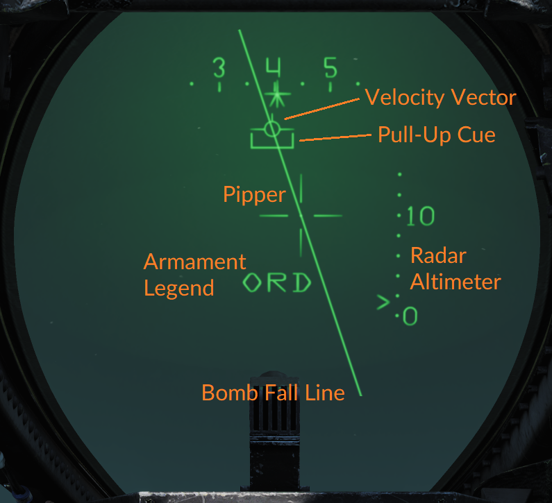计算机引导模式使用WCS连续计算并显示HUD上配置挂载的落点。
选择计算机引导模式后，HUD使用准心（十字准线）实时显示当前的挂载落点。 当WCS配置为火箭弹时，如果没打到火箭弹的射程，会有一个菱形覆盖在准心上，表示不在当前武器的射程内。 与计算机目标和IP模式一样， 当飞机的高度低于？？？。
为了攻击目标，飞行员应用准心瞄准目标，然后按下炸弹释放按钮。
当使用火箭弹时，飞行员应该等到菱形消失，即在所选火箭弹的射程内，使用扳机发射火箭弹。
手动¶

当其他模式不可用时，手动空对地模式用作备用。
原则上它与计算机引导模式的工作原理相同，因为飞行员应当用准心瞄准目标。在这个模式下WCS不会更新准心，但会根据所需的接近速度，俯冲角度和释放高度为ADL（武器基准线）设置偏转。
This is set using the elevation lead panel on the pilot right side vertical panel using weapon engagement tables or by pilot estimation.
Mk-81、Mk-82、Mk-83 和 Mk-84 通用航空炸弹¶
U.S. Navy photo by Photographer's Mate Airman Justin S. Osborne. (030321-N-0382O-506)
The Mk-80 series bombs are the standard general purpose bombs used by the US Navy and allies and where first dropped in combat during the Vietnam war. The Mk-82 also has the capability to mount a retardation system using either folding fins or an inflated ballute to brake the bomb after release allowing them to be dropped at lower altitudes as the dropping aircraft has more time to move away from them. Those versions are called the Mk-82 Snake Eye (fins) and Mk-82AIR (ballute) in DCS.
The F-14B is capable of carrying all the various bombs in the Mk-80s series, 81 through to 84. While the ground attack mission never really materialised for the F-14 in the navy it was tested for and cleared to deliver these weapons from the start.
The F-14 uses the Phoenix rails (stations 3-6) and the glove pylons' lower stations to mount the bombs. The rails themselves can carry all four variants while the 81 to 83 can also be mounted on substations along the sides of the phoenix rails as well as on TERs on the glove pylons.
All of the Mk-80 bombs has nose fuzes only and should be dropped with the nose (N) fuze setting on the mechanical fuze switch on the RIO armament panel. The Mk-82AIR and Snake Eye variants use the tail fuze wire to enable bomb retardation meaning that the nose/tail (N/T) mechanical fuze option should be used if retardation is needed.
The total amount of the different bombs carried depends on weapon weight and weapon clearance between the rails, the actual number varies from 18 for the 81s and 82s to just 4 for the 84s as those can only be mounted on the rails themselves. For more info see the F-14 loadout diagrams.
GBU-10、GBU-12、GBU-16 和 GBU-24 炸弹¶
U.S. Navy photo by Photographer's Mate Airman Milosz Reterski. (040105-N-9742R-001)
The GBU (guided bomb unit) are bombs from the Mk-80s series with an attached seeker unit and fin (control) unit converting them into guided precision bombs, and in the case of the GBU-10, 12, 16 and 24 carried by the F-14B, laser guided bombs to be more precise.
When the F-14B gained the ability to mount and use the LANTIRN pod it was also cleared to carry some of the GBU variants of the Mk-80 series bombs. It can either deliver them onto designation from a self-carried LANTIRN pod or onto a laser designation from another aircraft or ground source.
The GBUs carried are mounted on the Phoenix rails themselves on stations 3-6 as the additional size of a GBU compared to a normal Mk-80 series bomb makes it impossible to use the substations on the rails for those. Each station is capable of carrying one GBU up to the size of the GBU-10. As for the GBU-24 they need to be carried one each on the front and back rails and on opposite sides of the aircraft as the GBU-24 is larger than the GBU-10.
| 注意: | GBU laser codes are set as per Heatblur DCS F-14 任务编辑器相关功能 or via the kneeboard. |
|---|
Mk-20“石眼”炸弹¶
The Mk-20 Rockeye is a conventional free fall bomb like the Mk-80 series bombs but instead of a conventional charge it carries anti-tank submunitions. The Rockeye contains 247 of these anti-tank submunitions which are released at a set height using a radar altimeter, the design being that the submunitions are dispersed over a large area for greater effect.
The fuze height itself is set by the ground crew as they're loaded and can't be changed by the pilot. To arm the Rockeye correctly the mechanical fuse should be set to nose (N).
The F-14B can carry up to 10 Mk-20 Rockeyes using the Phoenix rails and substations as well as TERs on the glove pylons.
| 注意: | Additional fuse settings (FMU-140 fuse) pending additional weapon code implementation. |
|---|
“祖尼”火箭弹¶
The Zuni 5-inch folding-fin aircraft rocket (FFAR) was developed to replace the high velocity aircraft rocket (HVAR) of world war 2 vintage. As part of its design it's modular and capable of using different warheads as well as different fuzes.
The Zuni rockets are carried in LAU-10 pods, each carrying 4 rockets. The pods can fire in either salvo mode or ripple mode, salvo launching one rocket and ripple all.
The F-14B Tomcat can carry LAU-10 rocket pods on stations 1B, 3, 6 and 8B using TERs, each TER holding up to two pods except on of either 3 or 6 which must only carry one as not to clash with a pod on the adjacent station. The TERs are used to gain separation from the station for safe rocket firing and the reason for not being able to use three pods on the TERs are that on the glove pylons the inner TER station would conflict with the main landing gear and on stations 3 and 6 with the fuselage.
The Zuni rockets are set up for launch by the RIO on the armament panel as with bombs, the delivery mode (DLVY MODE) switches being used to configure how many pods to activate at a time.
BDU-33 训练弹¶
The BDU-33 practice bomb is a training round used to simulate a Mk-82 general purpose bomb for training purposes. They can be carried three to a TER on each of station 3, 4, 5 and 6 on the F-14B Tomcat.
They are set up for release as with the real general purpose bombs.
特种弹药¶
ADM-141 TALD（战术空射诱饵）¶
由摄影师 Mate 3rd Class Mark J. Rebilas 拍摄的美国海军照片。(041018-N-6213R-021)
ADM-141战术空射诱饵（TALD）是一种利用主动和被动手段模拟真实飞机的滑翔诱饵。TALD有好几个版本，例如有一个版本发射箔条，另一个版本使用龙勃透镜来增大RCS，用来模拟一架更大的飞机。
所有的版本在起飞前都是预编程的，并且利用折叠机翼向外展开来实现无动力滑行。
F-14B最多可携带4枚 ADM-141 战术空射诱饵，从3号挂点到6号挂点各一枚，每个挂点都使用三联装挂架来和飞机机身分开。
LUU-2 降落伞照明弹¶
LUU-2 降落伞照明弹由空中发射，用降落伞延缓降落，在夜间照亮地面。
F-14B可以携带多达16个 LUU-2 照明弹，在4号和5号挂点上通过三联装挂架挂载最多4个 SUU-25 照明弹布撒器，每个三联装挂架最多能携带2个布撒器，这是为了避免和机身冲突。
LUU-2 降落伞照明弹和通用炸弹一样发射和设置。
LAU-138 箔条扩容器¶
LAU-138 箔条扩容器 (或者称为BOL rail)由瑞典的Celcius Tech设计，用来增强作战飞机携带箔条对抗措施的能力。这个箔条布撒器的特殊之处在于它不是使用火药来发射的，而是通过机械动作。
虽然每个扩容器可以携带多达 160包箔条，但是每个包不是一个标准的箔条包，意思是每个箔条释放周期中对2个扩容器的设置会总共发射4包箔条。即使每次释放4包，这也意味着对2个LAU-138的设置，总共携带320包，仍然能够释放80次，极大地增加了飞机携载箔条的数量。
扩容器本身替代了正常的 LAU-7“响尾蛇”发射滑轨，使得F-14B在不影响携载其他武器的能力下携载更多的箔条。虽然在技术上A和B挂点上的翼套挂架都能挂载 LAU-138，在现实中B挂点不可能连接到 AIM-9 的冷却瓶，意味着只有A挂点挂载 LAU-138 箔条扩容器。
更多关于LAU-138 箔条扩容器的信息，请在总体设计和系统预览章节下的AN/ALE-29 和39部分获取。
烟雾吊舱¶
拉烟吊舱在航展上使用，使用时类似 AIM-9 与飞机交互的方式。
为了激活或者断开拉烟吊舱，使用瞄准线模式并选择 AIM-9 等待发射，然后通过飞行员驾驶杆上的武器选择按钮选择相应的武器挂点。设置完成和主军械打开后，每次扣动扳机会激活或者断开拉烟。
TACTS 吊舱¶
TACTS 吊舱在训练任务中用作分析，它在 LAU-7 滑轨而不是在 AIM-9 系列导弹上面携载，通常在 1A 和 8A 挂点上。它们通常成对携带，每侧一个。
| 注意: | 在DCS中它们的作用纯粹是装点门面。 |
|---|
吊舱和油箱¶
FPU-1 油箱¶
FPU-1 油箱由F-14B“雄猫”携载于发动机舱下的2号和7号挂点。每个油箱能携带多达2 000磅燃油，可使用正常程序像其他挂载一样抛弃。
LANTIRN吊舱¶
由摄影师 Mate Airman Jason Frost 拍摄的美国海军照片。(030122-N-9403F-002)
LANTIRN 吊舱在20世纪90年代适配给 F-14“雄猫”，因为 F-14 的角色开始向精确对地攻击倾斜。
Heatblur DCS F-14B “雄猫”上的版本代表最早的集成化的 LANTIRN 吊舱，只能挂载在8B挂点上，与RIO驾驶舱上的控制面板通过电路连接，视频输出到TID/VDI。
更多关于 LANTIRN 吊舱的信息，请在总体设计和系统预览章节中获取。
CNU-188 外挂行李舱¶
CNU-188 外挂行李吊舱由副油箱改装而来，用来在转场时携带设备和补给。F-14B 的4号或者5号挂点各自可以挂载一个，最大载荷为350磅。
| 注意: | 在DCS中等待完成。 |
|---|
F-14B 挂载示意图¶
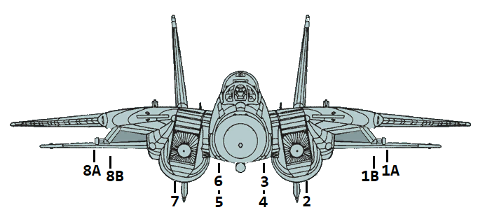| 武器 挂架 | 1A | 1B | 2 | 3 | 4 | 5 | 6 | 7 | 8B | 8A | 最大挂载量 |
|---|---|---|---|---|---|---|---|---|---|---|---|
| AIM-9 | 1 | 1 | 1 | 1 | 4 | ||||||
| AIM-7 | 1 | 1 | 1 | 1 | 1 | 1 | 6 | ||||
| AIM-54 | 1 | 1 | 1 | 1 | 1 | 1 | 6 | ||||
| Mk-81 | 2 | 4 | 3 | 3 | 4 | 2 | 18 | ||||
| Mk-82 | 2 | 4 | 3 | 3 | 4 | 2 | 18 | ||||
| Mk-82AIR | 2 | 4 | 3 | 3 | 4 | 2 | 18 | ||||
| Mk-82“蛇眼” | 2 | 4 | 3 | 3 | 4 | 2 | 18 | ||||
| Mk-83 | 1 | 3 | 1 | 1 | 3 | 1 | 10 | ||||
| Mk-84 | 1 | 1 | 1 | 1 | 4 | ||||||
| Mk-20 | 2 | 2 | 1 | 1 | 2 | 2 | 10 | ||||
| GBU-10 | 1 | 1 | 1 | 1 | 4 | ||||||
| GBU-12 | 1 | 1 | 1 | 1 | 4 | ||||||
| GBU-16 | 1 | 1 | 1 | 1 | 4 | ||||||
| GBU-24 | 1 | 1 | 2 | ||||||||
| BDU-33 | 3 | 3 | 3 | 3 | 3 | 3 | 18 | ||||
| LAU-10（祖尼） | 2 | 2 | 1 | 2 | 7(28) | ||||||
| ADM-141A TALD | 1 | 1 | 1 | 1 | 4 | ||||||
| SUU-25 F/A 干扰弹布撒器 | 2 | 2 | 4(16) | ||||||||
| LAU-138 箔条扩容器 | 1 | 1 | 2 | ||||||||
| 烟雾吊舱 | 1 | 1 | 1 | 1 | 4 | ||||||
| TACTS 吊舱 | 1 | 1 | 2 | ||||||||
| LANTIRN吊舱 | 1 | 1 | |||||||||
| FPU-1 油箱 | 1 | 1 | 2 | ||||||||
| CNU-188 外挂行李舱 | 1 | 1 | 1 |